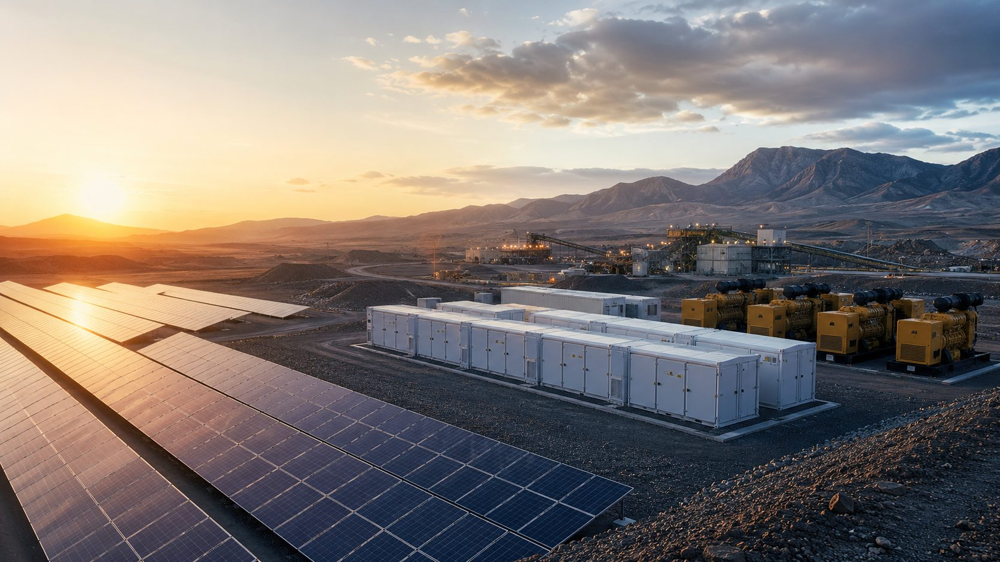

Independent early-stage project intelligence
Industrial energy projects need more than a model. They need a clear early decision.
Heliovulcan Energy Advisors provides independent early-stage project intelligence for industrial solar + BESS opportunities. The screening workflow tests whether a project idea is technically sensible, commercially fair and financeable — before expensive EPC, legal or financing work begins.
Designed for weak-grid mines, industrial loads, logistics facilities and other energy-intensive sites considering solar, battery storage, diesel reduction or EaaS-style commercial structures.
This is not EPC design, legal advice, financial advice, or an investment recommendation. It is an early sanity check to identify value, risks, and next-step questions.
Why early screening matters
Most project problems are visible early — if you know where to look
Many projects do not fail because the battery is impossible. They fail because the customer value, contract revenue and financing case were never tested together — early enough, and in one place.
An early-stage sanity check turns that uncertainty into a structured decision: proceed, optimise, redesign, or stop — before EPC quotation, legal structuring or financing conversations begin.
Does the customer actually save money?
Can the project company earn bankable revenue?
The screening framework
Five questions that decide most projects
Every industrial solar + BESS project is screened through five connected questions. Most problems show up where two of them meet.
Technical fit
Is the PV, BESS, PCS, GFM and diesel-backup sizing matched to the real load — not the peak?
Customer avoided cost
What does the customer actually stop paying, compared with diesel or grid supply?
Contract revenue
How much of that value becomes stable, contracted SPV revenue — not just a saving?
Carbon value
Is the carbon benefit real and visible — and kept out of double-counted revenue?
Bankability
Does the fixed revenue actually support debt service, DSCR and what a lender will ask?
Featured case study · Case 01
Weak-grid industrial solar + BESS EaaS screening

Case summary
PV3.0 MWp
BESS1.5 MW / 6.0 MWh
PCS2.5 MW (N+1)
TIC incl. IDC$9.17M
Customer avoided benefit$2.08M/yr
EaaS annual fee$1.31M/yr
Buyer saving$563.5K/yr
Carbon value (customer-side)$67K/yr
S1 Min DSCR0.60x vs 1.30x target
Conclusion
Not bankable under the current debt structure — a lesson in why
Customer value was strong — but the debt case failed.
The customer-side avoided-cost pool was material. The SPV financing case was not. This screen shows exactly where the gap is, what caused it, and what would need to change before proceeding to EPC or financing conversations.
What the workflow produces
Sample report outputs
These outputs are generated from the same project screening logic, but written for different readers.
Client Decision Card
For site owners and customer-side decision makers.
A one-page summary covering project context, indicative sizing, customer benefit, contract revenue, bankability result, red flags, and next-step recommendation.
- Customer avoided cost & EaaS fee
- Buyer saving (A$/yr)
- Carbon value (customer-side)
- Bankability verdict
- Recommended next step
Technical Screening Note
For developers and technical reviewers.
A structured note covering PV/BESS sizing logic, load fit, diesel or grid displacement, operating assumptions, augmentation, and key sensitivities.
- PV / BESS / PCS sizing rationale
- Load fit and diesel displacement
- Operating assumptions
- Key sensitivities
Bankability Snapshot
For investors, lenders and internal review.
A lender-style snapshot showing contracted revenue, CFADS, DSCR, debt capacity, and whether the current structure passes basic screening.
- S1 / S2 / S3 scenario comparison
- DSCR and debt capacity
- Lock-up / default warning lines
- Pass / fail verdict with reasoning
Sample output format available on request. A downloadable example is linked in the Fountain Head case study.
What I actually think
My point of view
01
Customer avoided cost is not the same as project company revenue. The customer’s whole saving is not what the SPV gets paid — only the contracted fee is.
02
A project can create customer savings and still fail the lender case. A bank underwrites coverage and contracted cash flow, not goodwill.
03
Carbon value should be visible, but not double-counted. I keep it on the customer side and out of base SPV revenue.
04
Contracted EaaS revenue matters more than speculative arbitrage. Fixed payments carry debt; market upside is a bonus, not a base case.
05
Early feasibility should help people decide whether to proceed, optimise, redesign or stop. The point is a clear decision, not a perfect forecast.
Thinking in public
Project Notes
Short notes on industrial solar + BESS feasibility, EaaS revenue structures, project finance logic and the practical questions that come up when screening real projects early.
EaaS / bankability
Customer savings are not bankable revenue
Customer savings are not the same as project company revenue. Why I split the analysis into S1, S2 and S3.
Read note → BESS feasibilityWeak-grid mines are not just an energy problem
Diesel is backup, peak support and security. Size storage to sustained load, not rare peaks.
Read note → Project financeThe problem is not technology. The problem is bankability.
Can this system be built is the easy question. Can it be paid for, contracted and financed is the hard one.
Read note →About
I work on early-stage BESS feasibility for industrial energy projects — behind-the-meter solar + storage, diesel displacement, EaaS revenue structures and project bankability.
Heliovulcan Energy Advisors is the workflow I am building to test whether an industrial solar + BESS idea makes sense before it moves into expensive EPC quotation, legal structuring or financing work.
The work combines technical sizing, customer avoided-cost analysis, service-fee revenue logic, carbon value separation, debt sizing and lender-style metrics such as DSCR. The purpose is not to replace detailed engineering or formal due diligence, but to give an early, structured view of whether the project logic is coherent.
My broader background in energy, industrial decarbonisation, policy and emissions modelling helps me understand the customer context, but Heliovulcan Energy Advisors is focused on BESS feasibility: does the system fit the load, does the customer save money, does the project company earn stable revenue, and does the financing case hold together?
I am building this as an independent project-intelligence workflow for peer discussion and early project sanity checks. It is not EPC design, legal advice, tax advice, financial advice, investment advice or a certified bankable model. The goal is to make the first project conversation sharper: is this idea worth developing further, what needs to change, and what questions should be asked next?
Founder: Grant Chen
Peer project review
Free sanity check
This is a free peer-style review, not a formal consulting engagement. If you are looking at an early industrial solar + BESS idea, I’m happy to sanity-check the project logic with you: what looks sound, what needs testing, and what questions should be asked before EPC quotes or investor discussions.
An early logic check
- Technical sizing direction
- Customer avoided-cost logic
- EaaS revenue logic
- Carbon value separation
- S1 / S2 / S3 scenario framing
- Bankability red flags
- Questions to ask before an EPC quote or investor discussion
Where you need a professional
- EPC engineering design
- Legal advice
- Tax advice
- Financial advice
- Investment recommendation
- A certified bankable financial model
- A formal consulting report
To request an early sanity check, send 5 basic inputs
- Site type — mine, industrial facility, logistics site, remote load, or other
- Annual electricity use or diesel consumption — approximate figures are fine
- Current energy cost, diesel cost, or tariff estimate
- Rough load pattern — day/night split, peak demand, or operating hours
- Decision question — proceed, redesign, compare offer, prepare investor discussion, or stop
No confidential engineering files are required for the first screen. The initial review is based on high-level project information and public or indicative assumptions.
Important boundary
This is not legal, financial, tax, engineering or investment advice. It is an early project logic check and a peer-style discussion — nothing more.